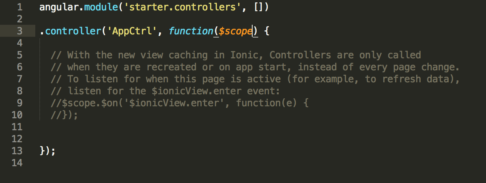

MVC applications typically use different controllers to differentiate between and control different logic flows in an application. For this application, it is simple enough that we are going to have all the logic controlled within AppCtrl, and thus we can delete PlaylistsCtrl and PlaylistCtrl. Remember to add a semi-colon at the end of AppCtrl once that is done, however. You can also remove the login functions, as we won't be using them here.
Pausing briefly, you'll notice a that the structure of this controller includes a JavaScript function. In particular, there are currently three variables be passed in as parameters in the function -
The pattern here is that Angular variables (such as $scope) must have the dollar sign prepending them. In a later part of this how-to, we're going to be defining factories that create variables we'll also need to pass into the controller's function in order to use them within the controller. Those variables don't need to have dollar signs prepending them.
Looking at the variables being passed in currently, we can also remove some of those. The $scope variable must remain - this is the variable that we will use to define variables that are available for use in the view. If you are familiar with Ruby on Rails, adding a scope-level variable is similar to creating an instance variable.
The other two variables, $ionicModal and $timeout, were left over from some of the pre-generated code, so you can remove those from the controller parameters. AppCtrl should now look thus:

With that done, we're ready to set up the geolocation for the app.